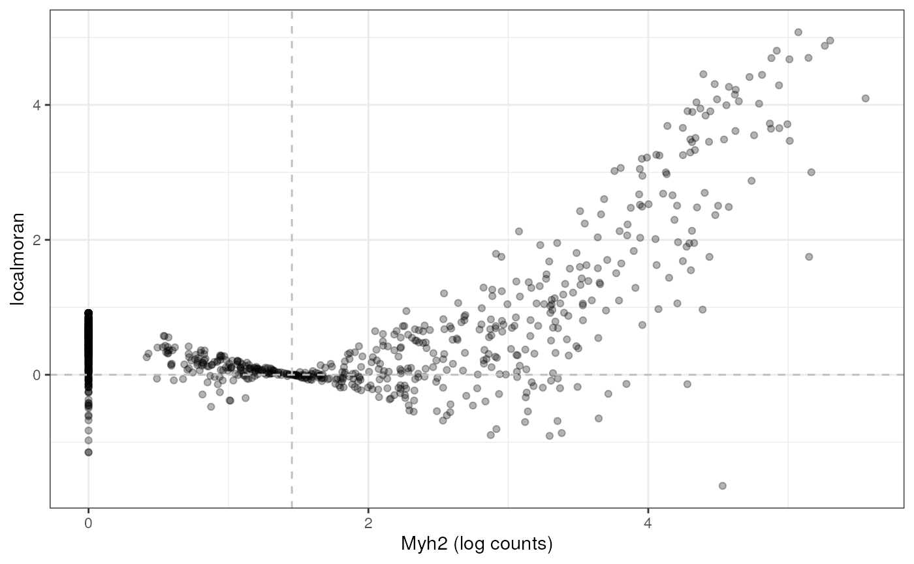

Exploratory spatial data analysis with Voyager
Lambda Moses
dlu2@caltech.eduLior Pachter
lpachter@caltech.edu2023-07-19
Source:vignettes/workshop.Rmd
workshop.RmdIntroduction
Slides TBD. The following R packages are used in this workshop, which are all on CRAN or Bioconductor. Bioconductor 3.17 is used in the workshop presented at Bioc2023.
library(SpatialFeatureExperiment)
library(SingleCellExperiment)
library(Voyager)
library(SFEData)
library(scran)
library(scater)
library(ggplot2)
library(rjson)
library(Matrix)
library(sf)
library(scales)
library(patchwork)
library(BiocParallel)
library(tibble)
library(tidyr)
library(scico)
library(pheatmap)
theme_set(theme_bw())
SpatialFeatureExperiment
SpatialFeatureExperiment (SFE) is a new S4 class built on top of SpatialExperiment
(SPE). SpatialFeatureExperiment incorporates geometries and
geometry operations with the sf
package. Examples of supported geometries are Visium spots represented
with polygons corresponding to their size, cell or nuclei segmentation
polygons, tissue boundary polygons, pathologist annotation of
histological regions, and transcript spots of genes. Using
sf, SpatialFeatureExperiment leverages the
GEOS C++ libraries underlying sf for geometry operations,
including algorithms for for determining whether geometries intersect,
finding intersection geometries, buffering geometries with margins, etc.
A schematic of the SFE object is shown below:

Schematics of the SFE object
Below is a list of SFE features that extend the SPE object:
-
colGeometriesaresfdata frames associated with the entities that correspond to columns of the gene count matrix, such as Visium spots or cells. The geometries in thesfdata frames can be Visium spot centroids, Visium spot polygons, or for datasets with single cell resolution, cell or nuclei segmentations. MultiplecolGeometriescan be stored in the same SFE object, such as one for cell segmentation and another for nuclei segmentation. There can be non-spatial, attribute columns in acolGeometryrather thancolData, because thesfclass allows users to specify how attributes relate to geometries, such as “constant”, “aggregate”, and “identity”. See theagrargument of thest_sfdocumentation. -
colGraphsare spatial neighborhood graphs of cells or spots. The graphs have classlistw(spdeppackage), and thecolPairsofSingleCellExperimentwas not used so no conversion is necessary to use the numerous spatial dependency functions fromspdep, such as those for Moran’s I, Geary’s C, Getis-Ord Gi*, LOSH, etc. Conversion is also not needed for other classical spatial statistics packages such asspatialregandadespatial. -
rowGeometriesare similar tocolGeometries, but support entities that correspond to rows of the gene count matrix, such as genes. A potential use case is to store transcript spots for each gene in smFISH or in situ sequencing based datasets. -
rowGraphsare similar tocolGraphs. A potential use case may be spatial colocalization of transcripts of different genes. -
annotGeometriesaresfdata frames associated with the dataset but not directly with the gene count matrix, such as tissue boundaries, histological regions, cell or nuclei segmentation in Visium datasets, and etc. These geometries are stored in this object to facilitate plotting and usingsffor operations such as to find the number of nuclei in each Visium spot and which histological regions each Visium spot intersects. UnlikecolGeometriesandrowGeometries, the number of rows in thesfdata frames inannotGeometriesis not constrained by the dimension of the gene count matrix and can be arbitrary. -
annotGraphsare similar tocolGraphsandrowGraphs, but are for entities not directly associated with the gene count matrix, such as spatial neighborhood graphs for nuclei in Visium datasets, or other objects like myofibers. These graphs are relevant tospdepanalyses of attributes of these geometries such as spatial autocorrelation in morphological metrics of myofibers and nuclei. With geometry operations withsf, these attributes and results of analyses of these attributes (e.g. spatial regions defined by the attributes) may be related back to gene expression. -
localResultsare similar toreducedDimsinSingleCellExperiment, but stores results from univariate and bivariate local spatial analysis results, such as fromlocalmoran, Getis-Ord Gi*, and local spatial heteroscedasticity (LOSH). Unlike inreducedDims, for each type of results (type is the type of analysis such as Getis-Ord Gi*), each feature (e.g. gene) or pair of features for which the analysis is performed has its own results. The local spatial analyses can also be performed for attributes ofcolGeometriesandannotGeometriesin addition to gene expression andcolData. Results of multivariate spatial analysis such as MULTISPATI PCA can be stored inreducedDims.

Part 1: The SFE class
Create an SFE object
Visium Space Ranger output
10x Genomics Space Ranger output from a Visium experiment can be read
in a similar manner as in SpatialExperiment; the
SpatialFeatureExperiment SFE object has the
spotPoly column geometry for the spot polygons. If the
filtered matrix (i.e. only spots in the tissue) is read in, then a
column graph called visium will also be present for the
spatial neighborhood graph of the Visium spots on the tissue. The graph
is not computed if all spots are read in regardless of whether they are
on tissue.
# Example from SpatialExperiment
dir <- system.file(
file.path("extdata", "10xVisium"),
package = "SpatialExperiment")
sample_ids <- c("section1", "section2")
(samples <- file.path(dir, sample_ids, "outs"))
#> [1] "/usr/local/lib/R/site-library/SpatialExperiment/extdata/10xVisium/section1/outs"
#> [2] "/usr/local/lib/R/site-library/SpatialExperiment/extdata/10xVisium/section2/outs"The results for each tissue capture should be in the
outs directory. Inside the outs directory
there are two directories: raw_reature_bc_matrix has the
unfiltered gene count matrix, and spatial has the spatial
information.
list.files(samples[1])
#> [1] "raw_feature_bc_matrix" "spatial"The DropletUtils
package has a function read10xCounts() which reads the gene
count matrix. SPE reads in the spatial information, and SFE uses the
spatial information to construct Visium spot polygons and spatial
neighborhood graphs. Inside the spatial directory:
list.files(file.path(samples[1], "spatial"))
#> [1] "scalefactors_json.json" "tissue_lowres_image.png"
#> [3] "tissue_positions_list.csv"tissue_lowres_image.png is a low resolution image of the
tissue.
Inside the scalefactors_json.json file:
fromJSON(file = file.path(samples[1], "spatial", "scalefactors_json.json"))
#> $spot_diameter_fullres
#> [1] 89.44476
#>
#> $tissue_hires_scalef
#> [1] 0.1701114
#>
#> $fiducial_diameter_fullres
#> [1] 144.4877
#>
#> $tissue_lowres_scalef
#> [1] 0.05103343spot_diameter_fullres is the diameter of each Visium
spot in the full resolution H&E image in pixels.
tissue_hires_scalef and tissue_lowres_scalef
are the ratio of the size of the high resolution (but not full
resolution) and low resolution H&E image to the full resolution
image. fiducial_diameter_fullres is the diameter of each
fiducial spot used to align the spots to the H&E image in pixels in
the full resolution image.
The tissue_positions_list.csv file contains information
for the spatial coordinates of the spots and whether each spot is in
tissue as automatically detected by Space Ranger or manually annotated
in the Loupe browser. If the polygon of the tissue boundary is
available, whether from image processing or manual annotation, geometric
operations as supported by the SFE package, which is based on the
sf package, can be used to find which spots intersect with
the tissue and which spots are contained in the tissue. Geometric
operations can also find the polygons of the intersections between spots
and the tissue, but the results can get messy since the intersections
can have not only polygons but also points and lines.
Now we read in the toy data that is in the Space Ranger output
format. Since Bioconductor version 3.17 (Voyager version 1.2.0), the
image is read as a SpatRaster object with the terra
package, so it is not loaded into memory unless necessary. When plotting
a large image, it will be downsampled and thus not fully loaded into
memory. The unit can be set with the unit argument, and can
be either pixels in full resolution image or microns. The latter is
calculated from the former based on spacing between spots, which is
known to be 100 microns.
(sfe3 <- read10xVisiumSFE(samples, dirs = samples, sample_id = sample_ids,
type = "sparse", data = "raw", images = "lowres",
unit = "full_res_image_pixel"))
#> class: SpatialFeatureExperiment
#> dim: 50 99
#> metadata(0):
#> assays(1): counts
#> rownames(50): ENSMUSG00000051951 ENSMUSG00000089699 ...
#> ENSMUSG00000005886 ENSMUSG00000101476
#> rowData names(1): symbol
#> colnames(99): AAACAACGAATAGTTC-1 AAACAAGTATCTCCCA-1 ...
#> AAAGTCGACCCTCAGT-1-1 AAAGTGCCATCAATTA-1-1
#> colData names(4): in_tissue array_row array_col sample_id
#> reducedDimNames(0):
#> mainExpName: NULL
#> altExpNames(0):
#> spatialCoords names(2) : pxl_col_in_fullres pxl_row_in_fullres
#> imgData names(4): sample_id image_id data scaleFactor
#>
#> unit: full_res_image_pixel
#> Geometries:
#> colGeometries: spotPoly (POLYGON)
#>
#> Graphs:
#> section1:
#> section2:Space Ranger output includes the gene count matrix, spot coordinates, and spot diameter. The Space Ranger output does NOT include nuclei segmentation or pathologist annotation of histological regions. Extra image processing, such as with ImageJ and QuPath, are required for those geometries.
From scratch
An SFE object can be constructed from scratch with the assay matrices
and metadata. In this toy example, dgCMatrix is used, but
since SFE inherits from SingleCellExperiment (SCE), other types of
arrays supported by SCE such as delayed arrays should also work.
# Visium barcode location from Space Ranger
data("visium_row_col")
coords1 <- visium_row_col[visium_row_col$col < 6 & visium_row_col$row < 6,]
coords1$row <- coords1$row * sqrt(3)
# Random toy sparse matrix
set.seed(29)
col_inds <- sample(1:13, 13)
row_inds <- sample(1:5, 13, replace = TRUE)
values <- sample(1:5, 13, replace = TRUE)
mat <- sparseMatrix(i = row_inds, j = col_inds, x = values)
colnames(mat) <- coords1$barcode
rownames(mat) <- sample(LETTERS, 5)This should be sufficient to create an SPE object, and an SFE object,
even though no sf data frame was constructed for the
geometries. The constructor behaves similarly to the SPE constructor.
The centroid coordinates of the Visium spots in the example can be
converted into spot polygons with the spotDiameter
argument, which can also be relevant to other technologies with round
spots or beads, such as Slide-seq. Spot diameter in pixels in full
resolution images can be found in the
scalefactors_json.json file in Space Ranger output.
sfe3 <- SpatialFeatureExperiment(list(counts = mat), colData = coords1,
spatialCoordsNames = c("col", "row"),
spotDiameter = 0.7)More geometries and spatial graphs can be added after calling the constructor.
Geometries can also be supplied in the constructor.
Part 2: Voyager ESDA
Dataset
The dataset used in this vignette is from the paper Large-scale
integration of single-cell transcriptomic data captures transitional
progenitor states in mouse skeletal muscle regeneration (McKellar et al. 2021). Notexin was injected
into the tibialis anterior muscle of mice to induce injury, and the
healing muscle was collected 2, 5, and 7 days post injury for Visium
analysis. The dataset in this vignette is from the timepoint at day 2.
The vignette starts with a SpatialFeatureExperiment (SFE)
object.
The gene count matrix was directly downloaded from
GEO. All 4992 spots, whether in tissue or not, are included. The
H&E image was used for nuclei and myofiber segmentation. A subset of
nuclei from randomly selected regions from all 3 timepoints were
manually annotated to train a StarDist model to segment the rest of the
nuclei, and the myofibers were all manually segmented. The tissue
boundary was found by thresholding in OpenCV, and small polygons were
removed as they are likely to be debris. Spot polygons were constructed
with the spot centroid coordinates and diameter in the Space Ranger
output. The in_tissue column in colData
indicates which spot polygons intersect the tissue polygons, and is
based on st_intersects().
Tissue boundary, nuclei, myofiber, and Visium spot polygons are
stored as sf data frames in the SFE object. See the
vignette of SpatialFeatureExperiment for more details
on the structure of the SFE object. The SFE object of this dataset is
provided in the SFEData package; we begin by downloading
the data and loading it into R.
(sfe <- McKellarMuscleData("full"))
#> see ?SFEData and browseVignettes('SFEData') for documentation
#> loading from cache
#> class: SpatialFeatureExperiment
#> dim: 15123 4992
#> metadata(0):
#> assays(1): counts
#> rownames(15123): ENSMUSG00000025902 ENSMUSG00000096126 ...
#> ENSMUSG00000064368 ENSMUSG00000064370
#> rowData names(6): Ensembl symbol ... vars cv2
#> colnames(4992): AAACAACGAATAGTTC AAACAAGTATCTCCCA ... TTGTTTGTATTACACG
#> TTGTTTGTGTAAATTC
#> colData names(12): barcode col ... prop_mito in_tissue
#> reducedDimNames(0):
#> mainExpName: NULL
#> altExpNames(0):
#> spatialCoords names(2) : imageX imageY
#> imgData names(1): sample_id
#>
#> unit: full_res_image_pixels
#> Geometries:
#> colGeometries: spotPoly (POLYGON)
#> annotGeometries: tissueBoundary (POLYGON), myofiber_full (POLYGON), myofiber_simplified (POLYGON), nuclei (POLYGON), nuclei_centroid (POINT)
#>
#> Graphs:
#> Vis5A:The H&E image of this section: 
if (!file.exists("tissue_lowres_5a.jpeg")) {
download.file("https://raw.githubusercontent.com/pachterlab/voyager/main/vignettes/tissue_lowres_5a.jpeg",
destfile = "tissue_lowres_5a.jpeg")
}The image can be added to the SFE object and plotted behind the geometries, and needs to be flipped to align to the spots because the origin is at the top left for the image but bottom left for geometries.
sfe <- addImg(sfe, file = "tissue_lowres_5a.jpeg", sample_id = "Vis5A",
image_id = "lowres",
scale_fct = 1024/22208)
sfe <- mirrorImg(sfe, sample_id = "Vis5A", image_id = "lowres")Exploratory data analysis
Spots in tissue
While the example dataset has all Visium spots whether on tissue or not, only spots that intersect tissue are used for further analyses.
names(colData(sfe))
#> [1] "barcode" "col" "row" "x" "y" "dia"
#> [7] "tissue" "sample_id" "nCounts" "nGenes" "prop_mito" "in_tissue"Total UMI counts (nCounts), number of genes detected per
spot (nGenes), and the proportion of mitochondrially
encoded counts (prop_mito) have been precomputed and are in
colData(sfe). The plotSpatialFeature function
can be used to visualize various attributes in space: the expression of
any gene, colData values, and geometry attributes in
colGeometry and annotGeometry. The Visium
spots are plotted as polygons reflecting their actual size relative to
the tissue, rather than as points, as is the case in other packages that
plot Visium data. The plotting of geometries is being performed under
the hood with geom_sf.
The tissue boundary was found by thresholding the H&E image and
removing small polygons that are most likely debris. The
in_tissue column of colData(sfe) indicates
which Visium spot polygon intersects the tissue polygon; this can be
found with SpatialFeatureExperiment::annotPred().
We demonstrate the use of scran (Lun, Bach, and Marioni 2016) for normalization
below, although we note that it is not necessarily the best approach to
normalizing spatial transcriptomics data. The problem of when and how to
normalize spatial transcriptomics data is non-trivial because, as the
nCounts plot in space shows above, spatial autocorrelation
is evident. Furthemrore, in Visium, reverse transcription occurs in situ
on the spots, but PCR amplification occurs after the cDNA is dissociated
from the spots. Artifacts may be subsequently introduced from the
amplification step, and these would not be associated with spatial
origin. Spatial artifacts may arise from the diffusion of transcripts
and tissue permeablization. However, given how the total counts seem to
correspond to histological regions, the total counts may have a
biological component and hence should not be treated as a technical
artifact to be normalized away as in scRNA-seq data normalization
methods. In other words, the issue of normalization for spatial
transcriptomics data, and Visium in particular, is complex and is
currently unsolved.
sfe_tissue <- sfe[,colData(sfe)$in_tissue]
sfe_tissue <- sfe_tissue[rowSums(counts(sfe_tissue)) > 0,]
#clusters <- quickCluster(sfe_tissue)
#sfe_tissue <- computeSumFactors(sfe_tissue, clusters=clusters)
#sfe_tissue <- sfe_tissue[, sizeFactors(sfe_tissue) > 0]
sfe_tissue <- logNormCounts(sfe_tissue)Myofiber and nuclei segmentation polygons are available in this
dataset in the annotGeometries field. Myofibers were
manually segmented, and nuclei were segmented with StarDist
trained with a manually segmented subset.
annotGeometryNames(sfe_tissue)
#> [1] "tissueBoundary" "myofiber_full" "myofiber_simplified"
#> [4] "nuclei" "nuclei_centroid"From myofibers and nuclei to Visium spots
The plotSpatialFeature() function can also be used to
plot attributes of geometries, i.e. the non-geometry columns in the
sf data frames in the rowGeometries,
colGeometries, or annotGeometries fields of
the SFE object. For rowGeometries and
colGeometries, such columns which are associated with the
sf data frames rather than rowData or
colData, are allowed because one can specify how these
columns associate with the geometries (see st_agr
and documentation
of st_sf). When an attribute of an
annotGeometry is plotted along side gene expression or
colData or colGeometry attribute, the
annotGeometry attribute is plotted with a different color
palette to distinguish it from the column associated values.
The myofiber polygons from annotGeometries can be
plotted as shown below, colored by cross section area as observed in the
tissue section. The aes_use argument is set to
color rather than fill (default for polygons)
to only plot the Visium spot outlines to make the myofiber polygons more
visible. The fill argument is set to NA to
make the Visium spots look hollow, and the size argument
controls the thickness of the outlines. The annot_aes
argument specifies which column in the annotGeometry to use
to specify the values of an aesthstic, just like aes in
ggplot2 (aes_string to be precise, since
tidyeval is not used here). The annot_fixed
argument (not used here) can set the fixed size, alpha, color, and etc.
for the annotGeometry.
plotSpatialFeature(sfe_tissue, features = "nCounts",
colGeometryName = "spotPoly",
annotGeometryName = "myofiber_simplified",
aes_use = "color", linewidth = 0.5, fill = NA,
annot_aes = list(fill = "area"))The larger myofibers seem to have fewer total counts, possibly because the larger size of these myofibers dilutes the transcripts. This hints at the need for a normalization procedure.
With SpatialFeatureExperiment, we can find the number of
myofibers and nuclei that intersect each Visium spot. The predicate can
be anything
implemented in sf, so for example, the number of nuclei
fully covered by each Visium spot can also be found. The default
predicate is st_intersects().
colData(sfe_tissue)$n_myofibers <-
annotNPred(sfe_tissue, colGeometryName = "spotPoly",
annotGeometryName = "myofiber_simplified")
plotSpatialFeature(sfe_tissue, features = "n_myofibers",
colGeometryName = "spotPoly", image = "lowres", color = "black",
linewidth = 0.1)
There is no one-to-one mapping between Visium spots and myofibers.
However, we can relate attributes of myofibers to gene expression
detected at the Visium spots. One way to do so is to summarize the
attributes of all myofibers that intersect (or choose another better
predicate implemented in sf) each spot, such as to
calculate the mean, median, or sum. This can be done with the
annotSummary() function in
SpatialFeatureExperiment. The default predicate is
st_intersects(), and the default summary function is
mean().
colData(sfe_tissue)$mean_myofiber_area <-
annotSummary(sfe_tissue, "spotPoly", "myofiber_simplified",
annotColNames = "area")[,1] # it always returns a data frame
# The gray spots don't intersect any myofiber
plotSpatialFeature(sfe_tissue, "mean_myofiber_area", "spotPoly", image = "lowres",
color = "black", linewidth = 0.1)This reveals the relationship between the mean area of myofibers intersecting each Visium spot and other aspects of the spots, such as total counts and gene expression.
The NAs designate spots not intersecting any myofibers, e.g. those in the inflammatory region.
In the Basic Visium vignette, we encountered two mysterious branches and two clusters in the nGenes vs. nCounts plot and the proportion of mitochondrial counts vs. nCounts plot. Now we see that the two clusters seem to be related to myofiber size.
plotColData(sfe_tissue, x = "nCounts", y = "nGenes", colour_by = "mean_myofiber_area")
plotColData(sfe_tissue, x = "nCounts", y = "prop_mito", colour_by = "mean_myofiber_area")
Myofiber types
Marker genes: Myh7 (Type I, slow twitch, aerobic), Myh2 (Type IIa, fast twitch, somewhat aerobic), Myh4 (Type IIb, fast twitch, anareobic), Myh1 (Type IIx, fast twitch, anaerobic), from this protocol (Wang, Yue, and Kuang 2017)
markers <- c(I = "Myh7", IIa = "Myh2", IIb = "Myh4", IIx = "Myh1")We first examine the Type I myofibers. This is a fast twitch muscle,
so we don’t expect many slow twitch Type I myofibers. Row names in
sfe_tissue are Ensembl IDs in order to avoid ambiguity as
sometimes multiple Ensembl IDs have the same gene symbol and some genes
have aliases. However, gene symbols are shorter and more human readable
than Ensembl IDs, and are better suited to display on plots. In the
plotSpatialFeature() function and other functions in
Voyager, even when the row names are recorded as Ensembl
IDs, the features argument can take gene symbols if there
is a column called “symbols” in rowData(sfe), where the
function converts the gene symbols to Ensembl IDs. By default, gene
symbols are shown on the plot, but the show_symbol argument
can be set to FALSE to show Ensembl IDs instead. If one
gene symbol matches multiple Ensembl IDs in the dataset, then a warning
will be given.
The exprs_values argument specifies the assay to use,
which is by default “logcounts”, i.e. the log normalized data. This
default may or may not be suitable in practice given that total UMI
counts may have biological relevance in spatial data. Therefore, we plot
both the raw counts and the log normalized counts:
# Function specific for this vignette, with some hard coded values
plot_counts_logcounts <- function(sfe, feature) {
p1 <- plotSpatialFeature(sfe, feature, "spotPoly",
annotGeometryName = "myofiber_simplified",
annot_aes = list(fill = "area"), swap_rownames = "symbol",
exprs_values = "counts", aes_use = "color", linewidth = 0.5,
fill = NA) +
ggtitle("Raw counts")
p2 <- plotSpatialFeature(sfe, feature, "spotPoly",
annotGeometryName = "myofiber_simplified",
annot_aes = list(fill = "area"), swap_rownames = "symbol",
exprs_values = "logcounts", aes_use = "color", linewidth = 0.5,
fill = NA) +
ggtitle("Log normalized counts")
p1 + p2 +
plot_annotation(title = feature)
}
plot_counts_logcounts(sfe_tissue, markers["I"])
A marker gene for type IIa myofibers is shown above. It is straightforward to modify the plotting to display markers for type IIb and type IIx myofibers:
plot_counts_logcounts(sfe_tissue, markers["IIa"])
Type IIa myofibers also tend to be clustered together on left side of the tissue.
As SFE inherits from SCE, the non-spatial EDA plots from the
scater package can also be used:
plotColData(sfe_tissue, x = "mean_myofiber_area", y = "prop_mito",
colour_by = markers["IIa"], by_exprs_values = "logcounts",
swap_rownames = "symbol")
#> Warning: Removed 36 rows containing missing values (`geom_point()`).
Plotting proportion of mitochondrial counts vs. mean myofiber area, we see two clusters, one with higher proportion of mitochondrial counts and smaller area, and another with lower proportion of mitochondrial counts and on average slightly larger area. Type IIa myofibers tend to have smaller area and a larger proportion of mitochondrial counts.
Spatial neighborhood graphs
A spatial neighborhood graph is required to compute spatial
dependency metrics such as Moran’s I and Geary’s C. The
SpatialFeatureExperiment package wraps methods in
spdep to find spatial neighborhood graphs, which are stored
within the SFE object (see spdep documentation for
gabrielneigh(), knearneigh(),
poly2nb(), and tri2nb()). The
Voyager package then uses these graphs for spatial
dependency analyses, again based on spdep in this first
version, but methods from other geospatial packages, some of which also
use the spatial neighborhood graphs, may be added later.
For Visium, where the spots are in a hexagonal grid, the spatial
neighborhood graph is straightforward. However, for spatial technologies
with single cell resolution, e.g. MERFISH, different methods can be used
to find the spatial neighborhood graph. In this example, the method
“poly2nb” was used for myofibers, and it identifies myofiber polygons
that physically touch each other. zero.policy = TRUE will
allow for singletons, i.e. nodes without neighbors in the graph; in the
inflamed region, there are more singletons. We have not yet benchmarked
spatial neighborhood construction methods to determine which is the
“best” for different technologies; the particular method used here is
for demonstration purposes and may not be the best in practice:
colGraph(sfe_tissue, "visium") <- findVisiumGraph(sfe_tissue)
annotGraph(sfe_tissue, "myofiber_poly2nb") <-
findSpatialNeighbors(sfe_tissue, type = "myofiber_simplified", MARGIN = 3,
method = "poly2nb", zero.policy = TRUE)The plotColGraph() function plots the graph in space
associated with a colGeometry, along with the geometry of
interest.
plotColGraph(sfe_tissue, colGraphName = "visium", colGeometryName = "spotPoly") +
theme_void()Similarly, the plotAnnotGraph() function plots the graph
associated with an annotGeometry, along with the geometry
of interest.
plotAnnotGraph(sfe_tissue, annotGraphName = "myofiber_poly2nb",
annotGeometryName = "myofiber_simplified") + theme_void()
There is no plotRowGraph yet since we haven’t worked
with a dataset where spatial graphs related to genes are relevant,
although the SFE object supports row graphs.
Exploratory spatial data analysis
All spatial autocorrelation metrics in this package can be computed
directly on a vector or a matrix rather than an SFE object. The user
interface emulates those of dimension reductions in the
scater package (e.g. calculateUMAP() that
takes in a matrix or SCE object and returns a matrix, and
runUMAP() that takes in an SCE object and adds the results
to the reducedDims field of the SCE object). So
calculate* functions take in a matrix or an SFE object and
directly return the results (format of the results depends on the
structure of the results), while run* functions take in an
SFE object and add the results to the object. In addition,
colData* functions compute the metrics for numeric
variables in colData. colGeometry* functions
compute the metrics for numeric columns in a colGeometry.
annotGeometry* functions compute the metrics for numeric
columns in a annotGeometry.
Univariate global
Voyager supports many univariate global spatial
autocorrelation implemented in spdep for ESDA: Moran’s I
and Geary’s C, permutation testing for Moran’s I and Geary’s C, Moran
plot, and correlograms. In addition, beyond spdep,
Voyager can cluster Moran plots and correlograms. Plotting
functions taking in SFE objects are implemented to plot the results with
ggplot2 and with more customization options than
spdep plotting functions. The functions
calculateUnivariate(), runUnivariate(),
colDataUnivariate(), colGeometryUnivariate(),
and annotGeometryUnivariate() compute univariate spatial
statistics. The argument type, which indicates the
corresponding function names in spdep, determines which
spatial statistics are computed.
All univariate global methods in Voyager are listed
here:
listSFEMethods(variate = "uni", scope = "global")
#> name description
#> 1 moran Moran's I
#> 2 geary Geary's C
#> 3 moran.mc Moran's I with permutation testing
#> 4 geary.mc Geary's C with permutation testing
#> 5 sp.mantel.mc Mantel-Hubert spatial general cross product statistic
#> 6 moran.test Moran's I test
#> 7 geary.test Geary's C test
#> 8 globalG.test Global G test
#> 9 sp.correlogram Correlogram
#> 10 variogram Variogram with model
#> 11 variogram_map Variogram mapWhen calling calculate*variate() or
run*variate(), the type (2nd) argument takes
either an SFEMethod object (see SFEMethod()
and vignette
on SFEMethod) or a string that matches an entry in the
name column in the data frame returned by
listSFEMethods().
To demonstrate spatial autocorrelation in gene expression, top highly
variable genes (HVGs) are used. The HVGs are found with the
scran method.
dec <- modelGeneVar(sfe_tissue)
hvgs <- getTopHVGs(dec, n = 50)A global statistic yields one result for the entire dataset.
Moran’s I
There are several ways to quantify spatial autocorrelation, the most common of which is Moran’s I:
\[ I = \frac{n}{\sum_{i=1}^n \sum_{j=1}^n w_{ij}} \frac{\sum_{i=1}^n \sum_{j=1}^n w_{ij} (x_i - \bar{x})(x_j - \bar{x})}{\sum_{i=1}^n (x_i - \bar{x})^2}, \]
where \(n\) is the number of spots
or locations, \(i\) and \(j\) are different locations, or spots in
the Visium context, \(x\) is a variable
with values at each location, and \(w_{ij}\) is a spatial weight, which can be
inversely proportional to distance between spots or an indicator of
whether two spots are neighbors, subject to various definitions of
neighborhood and whether to normalize the number of neighbors. The spdep
package uses the neighborhood.
Moran’s I can be understood as the Pearson correlation between the value at each location and the average value at its neighbors. Just like Pearson correlation, Moran’s I is generally bound between -1 and 1, where positive value indicates positive spatial autocorrelation and negative value indicates negative spatial autocorrelation.
Upon visual inspection, total UMI counts per spot seem to have
spatial autocorrelation. A spatial neighborhood graph is required to
compute Moran’s I, and is specified with the listw
argument.
For matrices, the rows are the features, as in the gene count matrix.
# Directly use vector or matrix, and multiple features can be specified at once
calculateUnivariate(t(colData(sfe_tissue)[,c("nCounts", "nGenes")]),
type = "moran",
listw = colGraph(sfe_tissue, "visium"))
#> DataFrame with 2 rows and 2 columns
#> moran K
#> <numeric> <numeric>
#> nCounts 0.528705 3.00082
#> nGenes 0.384028 3.88036“moran” is Moran’s I, and K is sample kurtosis.
To add the results to the SFE object, specifically for colData:
sfe_tissue <- colDataUnivariate(sfe_tissue, features = c("nCounts", "nGenes"),
colGraphName = "visium", type = "moran")
colFeatureData(sfe_tissue)[c("nCounts", "nGenes"),]
#> DataFrame with 2 rows and 2 columns
#> moran_Vis5A K_Vis5A
#> <numeric> <numeric>
#> nCounts 0.528705 3.00082
#> nGenes 0.384028 3.88036For colData, the results are added to
colFeatureData(sfe), and features for which Moran’s I is
not calculated have NA. The column names of featureData
distinguishes between different samples (there’s only one sample in this
dataset), and are parsed by plotting functions.
To add the results to the SFE object, specifically for geometries: Here “area” is the area of the cross section of each myofiber as seen in this tissue section and “eccentricity” is the eccentricity of the ellipse fitted to each myofiber.
# Remember zero.policy = TRUE since there're singletons
sfe_tissue <- annotGeometryUnivariate(sfe_tissue, type = "moran",
features = c("area", "eccentricity"),
annotGeometryName = "myofiber_simplified",
annotGraphName = "myofiber_poly2nb",
zero.policy = TRUE)
head(attr(annotGeometry(sfe_tissue, "myofiber_simplified"), "featureData"))
#> DataFrame with 6 rows and 2 columns
#> moran_Vis5A K_Vis5A
#> <numeric> <numeric>
#> lyr.1 NA NA
#> area 0.327888 4.95675
#> perimeter NA NA
#> eccentricity 0.110938 3.26913
#> theta NA NA
#> sine_theta NA NAFor a non-geometry column in a colGeometry,
colGeometryUnivariate() is like
annotGeometryUnivariate() here, but none of the
colGeometries in this dataset has extra columns.
For gene expression, the logcounts assay is used by
default (use the exprs_values argument to change the
assay), though this may or may not be best practice. If the metrics are
computed for a large number of features, parallel computing is
supported, with BiocParallel,
with the BPPARAM argument.
sfe_tissue <- runUnivariate(sfe_tissue, type = "moran", features = hvgs,
colGraphName = "visium",
BPPARAM = MulticoreParam(2))
rowData(sfe_tissue)[head(hvgs),]
#> DataFrame with 6 rows and 8 columns
#> Ensembl symbol type means
#> <character> <character> <character> <numeric>
#> ENSMUSG00000029304 ENSMUSG00000029304 Spp1 Gene Expression 1.63722
#> ENSMUSG00000050708 ENSMUSG00000050708 Ftl1 Gene Expression 2.37981
#> ENSMUSG00000050335 ENSMUSG00000050335 Lgals3 Gene Expression 1.43189
#> ENSMUSG00000021939 ENSMUSG00000021939 Ctsb Gene Expression 2.73117
#> ENSMUSG00000021190 ENSMUSG00000021190 Lgmn Gene Expression 1.11278
#> ENSMUSG00000018893 ENSMUSG00000018893 Mb Gene Expression 2.11118
#> vars cv2 moran_Vis5A K_Vis5A
#> <numeric> <numeric> <numeric> <numeric>
#> ENSMUSG00000029304 60.1583 22.4430 0.734937 1.63516
#> ENSMUSG00000050708 162.1931 28.6384 0.665563 1.81841
#> ENSMUSG00000050335 48.0739 23.4471 0.741474 1.68098
#> ENSMUSG00000021939 131.6232 17.6455 0.708362 1.86896
#> ENSMUSG00000021190 21.4505 17.3228 0.659916 1.66838
#> ENSMUSG00000018893 74.1782 16.6428 0.675840 1.82510Exercise: Compute Geary’s C on the highly variable genes.
Univariate local
Local statistics yield a result at each location rather than the
whole dataset, while global statistics may obscure local heterogeneity.
See (Fotheringham 2009) for an interesting
discussion of relationships between global and local spatial statistics.
Local statistics are stored in the localResults field of
the SFE object, which can be accessed by the localResult()
or localResults() functions in the
SpatialFeatureExperiment package.
All univariate local methods in Voyager are listed
here:
listSFEMethods(variate = "uni", scope = "local")
#> name description
#> 1 localmoran Local Moran's I
#> 2 localmoran_perm Local Moran's I permutation testing
#> 3 localC Local Geary's C
#> 4 localC_perm Local Geary's C permutation testing
#> 5 localG Getis-Ord Gi(*)
#> 6 localG_perm Getis-Ord Gi(*) with permutation testing
#> 7 LOSH Local spatial heteroscedasticity
#> 8 LOSH.mc Local spatial heteroscedasticity permutation testing
#> 9 LOSH.cs Local spatial heteroscedasticity Chi-square test
#> 10 moran.plot Moran scatter plotLocal Moran’s I
To recap, global Moran’s I is defined as
\[ I = \frac{n}{\sum_{i=1}^n \sum_{j=1}^n w_{ij}} \frac{\sum_{i=1}^n \sum_{j=1}^n w_{ij} (x_i - \bar{x})(x_j - \bar{x})}{\sum_{i=1}^n (x_i - \bar{x})^2}. \]
Local Moran’s I (Anselin 1995) is defined as
\[ I_i = (n-1)\frac{(x_i - \bar{x})\sum_{j=1}^n w_{ij} (x_j - \bar{x})}{\sum_{i=1}^n (x_i - \bar{x})^2}. \]
It’s similar to global Moran’s I, but the values at locations \(i\) are not summed and there’s no normalization by the sum of spatial weights.
sfe_tissue <- runUnivariate(sfe_tissue, type = "localmoran", features = "Myh2",
colGraphName = "visium", swap_rownames = "symbol")It is useful to plot the log normalized Myh2 gene expression as context to interpret the local results:
plotSpatialFeature(sfe_tissue, features = "Myh2", colGeometryName = "spotPoly",
swap_rownames = "symbol", image_id = "lowres", color = "black",
linewidth = 0.1)
plotLocalResult(sfe_tissue, "localmoran", features = "Myh2",
colGeometryName = "spotPoly",divergent = TRUE,
diverge_center = 0, image_id = "lowres",
swap_rownames = "symbol", color = "black",
linewidth = 0.1)
We see that regions with higher Myh2 expression also have stronger spatial autocorrelation. It is interesting to see how spatial autocorrelation relates to gene expression level, much as finding how variance relates to mean in the expression of each gene, which usually indicates overdispersion compared to Poisson in scRNA-seq and Visium data:
df <- data.frame(myh2 = logcounts(sfe_tissue)[rowData(sfe_tissue)$symbol == "Myh2",],
Ii = localResult(sfe_tissue, "localmoran", "Myh2",
swap_rownames = "symbol")[,"Ii"])
ggplot(df, aes(myh2, Ii)) + geom_point(alpha = 0.3) +
labs(x = "Myh2 (log counts)", y = "localmoran")
For this gene, Visium spots with higher expression also tend to have higher local Moran’s I, but this may or may not apply to other genes.
Local spatial analyses often return a matrix or data frame. The
plotLocalResult() function has a default column for each
local spatial method, but other columns can be plotted as well. Use the
localResultAttrs() function to see which columns are
present, and use the attribute argument to specify which
column to plot.
localResultAttrs(sfe_tissue, "localmoran", "Myh2", swap_rownames = "symbol")
#> [1] "Ii" "E.Ii" "Var.Ii" "Z.Ii"
#> [5] "Pr(z != E(Ii))" "mean" "median" "pysal"
#> [9] "-log10p" "-log10p_adj"Some local spatial methods return p-values at each location, in a
column with name like Pr(z != E(Ii)), where the test is two
sided (default, can be changed with the alternative
argument in runUnivariate() which is passed to the relevant
underlying function in spdep). Negative log of the p-value
is computed to facilitate visualization, and the p-value is corrected
for multiple hypothesis testing with p.adjustSP() in
spdep, where the number of tests is the number of neighbors
of each location rather than the total number of locations
(-log10p_adj).
plotLocalResult(sfe_tissue, "localmoran", features = "Myh2",
colGeometryName = "spotPoly", attribute = "-log10p_adj", divergent = TRUE,
diverge_center = -log10(0.05), swap_rownames = "symbol",
image_id = "lowres", color = "black",
linewidth = 0.1)
In this plot and all following plots of p-values, a divergent palette is used to show locations that are significant after adjusting for multiple testing and those that are not significant in different colors. The center of the divergent palette is p = 0.05, so the bluish spots are significant while a dark brown means really not significant.
The “pysal” column displays the quadrants relative to the means in the Moran plot. The result is similar to that from k-means clustering shown above.
plotLocalResult(sfe_tissue, "localmoran", features = "Myh2",
colGeometryName = "spotPoly", attribute = "pysal",
swap_rownames = "symbol", image_id = "lowres", color = "black",
linewidth = 0.1)
Exercise: Compute local spatial heteroscedasticity (LOSH) on Myh2 and plot the results.
Bivariate
A list of all bivariate global methods can be seen here:
listSFEMethods(variate = "bi", scope = "global")
#> name description
#> 1 lee Lee's bivariate statistic
#> 2 lee.mc Lee's bivariate static with permutation testing
#> 3 lee.test Lee's L test
#> 4 cross_variogram Cross variogram
#> 5 cross_variogram_map Cross variogram mapWhen calling calculate*variate() or
run*variate(), the type (2nd) argument takes
either an SFEMethod object or a string that matches an
entry in the name column in the data frame returned by
listSFEMethods().
Lee’s L
Lee’s L (Lee 2001) was developed from relating Moran’s I to Pearson correlation, and is defined as
\[ L_{X,Y} = \frac{n}{\sum_{i=1}^n \sum_{j=1}^n w_{ij}} \frac{\sum_{i=1}^n \left[ \sum_{j=1}^n w_{ij} (x_j - \bar{x}) \right] \left[ \sum_{j=1}^n w_{ij} (y_j - \bar{y}) \right]}{\sqrt{\sum_{i=1}^n (x_i - \bar{x})^2}\sqrt{\sum_{i=1}^n (y_i - \bar{y})^2} }, \]
where \(n\) is the number of spots or locations, \(i\) and \(j\) are different locations, or spots in the Visium context, \(x\) and \(y\) are variables with values at each location, and \(w_{ij}\) is a spatial weight, which can be inversely proportional to distance between spots or an indicator of whether two spots are neighbors, subject to various definitions of neighborhood.
Here we compute Lee’s L for top highly variagle genes (HVGs) in this dataset:
hvgs <- getTopHVGs(sfe_tissue, fdr.threshold = 0.01)Because bivariate global results can have very different formats (matrix for Lee’s L and lists for many other methods), the results are not stored in the SFE object.
res <- calculateBivariate(sfe_tissue, type = "lee", feature1 = hvgs)This gives a spatially informed correlation matrix among the genes, which can be plotted as a heatmap:
pal_rng <- getDivergeRange(res)
pal <- scico(256, begin = pal_rng[1], end = pal_rng[2], palette = "vik")
pheatmap(res, color = pal, show_rownames = FALSE,
show_colnames = FALSE, cellwidth = 1, cellheight = 1)
Some coexpression blocks can be seen. Note that unlike in Pearson correlation, the diagonal is not 1, because
\[ L_{X,X} = \frac{\sum_i (\tilde x_i - \bar x)^2}{\sum_i (x_i - \bar x)^2} = \mathrm{SSS}_X, \]
which is approximated the ratio between the variance of spatially lagged \(x\) and variance of \(x\). Because the spatial lag introduces smoothing, the spatial lag reduced variance, making the diagonal less than 1. This is the spatial smoothing scalar (SSS), and Moran’s I is approximately Pearson correlation between \(X\) and spatially lagged \(X\) (\(\tilde X\)) multiplied by SSS:
\[ I = \mathrm{SSS}_X \cdot \rho_{X, \tilde X} \]
Similarly for Lee’s L, as shown in (Lee 2001),
\[ L_{X, Y} = \sqrt{\mathrm{SSS}_X}\sqrt{\mathrm{SSS}_Y} \cdot \rho_{\tilde X, \tilde Y} \]
With more spatial clustering, the variance is less reduced by the spatial lag, leading to a larger SSS.
Weighted correlation network analysis (WGCNA) (Langfelder and Horvath 2008) is a time honored method to find gene co-expression modules, and it can take any correlation matrix. Then it would be interesting to apply WGCNA to the Lee’s L matrix to identify spatially informed gene co-expression modules.
Multivariate
Non-spatial PCA
hvgs2 <- getTopHVGs(dec, n = 2000)First we run non-spatial PCA, to compare to MULTISPATI.
set.seed(29)
system.time(
sfe_tissue <- runPCA(sfe_tissue, ncomponents = 20, subset_row = hvgs2,
exprs_values = "logcounts", scale = TRUE)
)
#> user system elapsed
#> 0.395 0.068 0.274That’s pretty quick for almost 400,000 cells, but there aren’t that many genes here. Use the elbow plot to see variance explained by each PC:
ElbowPlot(sfe_tissue)Plot top gene loadings in each PC
plotDimLoadings(sfe_tissue, swap_rownames = "symbol")
Many of these genes seem to be related to the endothelium. PC1 and PC4 concern the Kupffer cells as well, as the Kupffer cell marker gene Cdh5 has high loading.
Plot the first 4 PCs in space
spatialReducedDim(sfe_tissue, "PCA", 4,
divergent = TRUE, diverge_center = 0)
MULTISPATI PCA
system.time({
sfe_tissue <- runMultivariate(sfe_tissue, "multispati", colGraphName = "visium",
nfposi = 20, nfnega = 20, subset_row = hvgs2)
})
#> Warning: useNames = NA is deprecated. Instead, specify either useNames = TRUE
#> or useNames = TRUE.
#> user system elapsed
#> 0.582 0.100 0.426Then plot the most positive and most negative eigenvalues. Note that the eigenvalues here are not variance explained. Instead, they are the product of variance explained and Moran’s I. So the most positive eigenvalues correspond to eigenvectors that simultaneously explain more variance and have large positive Moran’s I. The most negative eigenvalues correspond to eigenvectors that simultaneously explain more variance and have negative Moran’s I.
ElbowPlot(sfe_tissue, nfnega = 20, reduction = "multispati")
Here the positive eigenvalues drop sharply from PC1 to PC4, and there
is only one very negative eigenvalue which might be interesting, which
is unsurprising given the moderately negative Moran’s I for
nCounts and nGenes. However, from the first
MERFISH vignette, none of the genes have very negative Moran’s I.
Perhaps the negative eigenvalue comes from negative spatial
autocorrelation in a gene program or “eigengene” and is not obvious from
individual genes. This is the beauty of multivariate analysis.
What do these components mean? Each component is a linear combination of genes to maximize the product of variance explained and Moran’s I. The second component maximizes this product provided that it’s orthogonal to the first component, and so on. As the loss in variance explained is usually not huge, these components can be considered axes along which spatially coherent groups of spots are separated from each other as much as possible according to expression of the highly variable genes, so in theory, clustering with positive MULTISPATI components should give more spatially coherent clusters. Because of the spatial coherence, MULTISPATI might be more robust to outliers.
plotDimLoadings(sfe_tissue, dims = 1:4, reduction = "multispati",
swap_rownames = "symbol")
Plot the these PCs:
spatialReducedDim(sfe_tissue, "multispati", 4,
divergent = TRUE, diverge_center = 0)
Spatial autocorrelation of principal components
Here we compare Moran’s I for cell embeddings in each non-spatial and MULTISPATI PC:
# non-spatial
sfe_tissue <- reducedDimMoransI(sfe_tissue, dimred = "PCA", components = 1:20)
# spatial
sfe_tissue <- reducedDimMoransI(sfe_tissue, dimred = "multispati", components = 1:40)
df_moran <- tibble(PCA = reducedDimFeatureData(sfe_tissue, "PCA")$moran_Vis5A[1:20],
MULTISPATI_pos =
reducedDimFeatureData(sfe_tissue, "multispati")$moran_Vis5A[1:20],
MULTISPATI_neg =
reducedDimFeatureData(sfe_tissue,"multispati")$moran_Vis5A[21:40] |>
rev(),
index = 1:20)
data("ditto_colors")
(mb <- moranBounds(colGraph(sfe_tissue, "visium")))
#> Imin Imax
#> -0.5762132 1.0021884
df_moran |>
pivot_longer(cols = -index, values_to = "value", names_to = "name") |>
ggplot(aes(index, value, color = name)) +
geom_line() +
scale_color_manual(values = ditto_colors) +
geom_hline(yintercept = 0, color = "gray") +
geom_hline(yintercept = mb, linetype = 2, color = "gray") +
scale_y_continuous(breaks = scales::breaks_pretty()) +
scale_x_continuous(breaks = scales::breaks_width(5)) +
labs(y = "Moran's I", color = "Type", x = "Component")
In MULTISPATI, Moran’s I is high in PC1 and PC2, but then sharply drops. Moran’s I for the PC with the most negative eigenvalues is not very negative, which means the large magnitude of that eigenvalue comes from explaining more variance. However, considering the lower bound of Moran’s I that is around -0.6 instead of -1, the magnitude of Moran’s I for the PC with the most negative eigenvalue is not trivial.
min(df_moran$MULTISPATI_neg) / mb[1]
#> Imin
#> 0.7553984Caveats
- In the current version of
Voyager, only univariate spatial autocorrelation metrics are supported. Anisotropy, bivariate, and multivariate spatial analyses will be added in later versions. - The H&E image can alter perception of the colors of the geometries.
- Only 2D data is supported at present, although in principle,
sfandGEOSsupport 3D data. - Spatial neighborhoods only make sense within the same tissue section. Then what to do with multiple tissue sections, from biological replica, and from different conditions? For the mouse brain, different biological replica can be registered to the Allen Common Coordinate Framework (CCF) to be spatially comparable. Indeed, it would be interesting to see the biological variability of healthy wild type gene expression at the same fine scaled region in the brain. However, there is no CCF for tissues without a stereotypical structure, such as adipose and skeletal muscle. We don’t have a good solution to spatially compare different tissue sections yet. Perhaps global spatial statistics over the whole section or histological regions within the section can be compared. The problem remains to select the most informative metrics to compare. Perhaps a spatially-informed dimension reduction method, taking not only the gene count matrix, but also the adjacency matrices of the spatial neighborhood graphs (different sections will be different blocks in the matrix) projecting the cells or Visium spots from different sections into a shared low dimensional space can facilitate the comparison. Here batch effect must be corrected, and the dimension reduction should be interpretable, and scalable.
Session info
sessionInfo()
#> R version 4.3.1 (2023-06-16)
#> Platform: x86_64-pc-linux-gnu (64-bit)
#> Running under: Ubuntu 22.04.2 LTS
#>
#> Matrix products: default
#> BLAS: /usr/lib/x86_64-linux-gnu/openblas-pthread/libblas.so.3
#> LAPACK: /usr/lib/x86_64-linux-gnu/openblas-pthread/libopenblasp-r0.3.20.so; LAPACK version 3.10.0
#>
#> locale:
#> [1] LC_CTYPE=en_US.UTF-8 LC_NUMERIC=C
#> [3] LC_TIME=en_US.UTF-8 LC_COLLATE=en_US.UTF-8
#> [5] LC_MONETARY=en_US.UTF-8 LC_MESSAGES=en_US.UTF-8
#> [7] LC_PAPER=en_US.UTF-8 LC_NAME=C
#> [9] LC_ADDRESS=C LC_TELEPHONE=C
#> [11] LC_MEASUREMENT=en_US.UTF-8 LC_IDENTIFICATION=C
#>
#> time zone: Etc/UTC
#> tzcode source: system (glibc)
#>
#> attached base packages:
#> [1] stats4 stats graphics grDevices utils datasets methods
#> [8] base
#>
#> other attached packages:
#> [1] pheatmap_1.0.12 scico_1.4.0
#> [3] tidyr_1.3.0 tibble_3.2.1
#> [5] BiocParallel_1.35.3 patchwork_1.1.2
#> [7] scales_1.2.1 sf_1.0-14
#> [9] Matrix_1.6-0 rjson_0.2.21
#> [11] scater_1.29.0 ggplot2_3.4.2
#> [13] scran_1.29.0 scuttle_1.11.0
#> [15] SFEData_1.3.0 Voyager_1.3.0
#> [17] SingleCellExperiment_1.23.0 SummarizedExperiment_1.31.1
#> [19] Biobase_2.61.0 GenomicRanges_1.53.1
#> [21] GenomeInfoDb_1.37.2 IRanges_2.35.2
#> [23] S4Vectors_0.39.1 BiocGenerics_0.47.0
#> [25] MatrixGenerics_1.13.0 matrixStats_1.0.0
#> [27] SpatialFeatureExperiment_1.3.0
#>
#> loaded via a namespace (and not attached):
#> [1] later_1.3.1 bitops_1.0-7
#> [3] filelock_1.0.2 R.oo_1.25.0
#> [5] lifecycle_1.0.3 edgeR_3.43.7
#> [7] rprojroot_2.0.3 lattice_0.21-8
#> [9] magrittr_2.0.3 limma_3.57.6
#> [11] sass_0.4.7 rmarkdown_2.23
#> [13] jquerylib_0.1.4 yaml_2.3.7
#> [15] metapod_1.9.0 httpuv_1.6.11
#> [17] sp_2.0-0 RColorBrewer_1.1-3
#> [19] DBI_1.1.3 zlibbioc_1.47.0
#> [21] purrr_1.0.1 R.utils_2.12.2
#> [23] RCurl_1.98-1.12 rappdirs_0.3.3
#> [25] GenomeInfoDbData_1.2.10 ggrepel_0.9.3
#> [27] irlba_2.3.5.1 terra_1.7-39
#> [29] units_0.8-2 RSpectra_0.16-1
#> [31] dqrng_0.3.0 pkgdown_2.0.7
#> [33] DelayedMatrixStats_1.23.0 codetools_0.2-19
#> [35] DropletUtils_1.21.0 DelayedArray_0.27.9
#> [37] tidyselect_1.2.0 farver_2.1.1
#> [39] ScaledMatrix_1.9.1 viridis_0.6.3
#> [41] BiocFileCache_2.9.1 jsonlite_1.8.7
#> [43] BiocNeighbors_1.19.0 e1071_1.7-13
#> [45] ellipsis_0.3.2 systemfonts_1.0.4
#> [47] tools_4.3.1 ggnewscale_0.4.9
#> [49] ragg_1.2.5 Rcpp_1.0.11
#> [51] glue_1.6.2 gridExtra_2.3
#> [53] SparseArray_1.1.10 xfun_0.39
#> [55] dplyr_1.1.2 HDF5Array_1.29.3
#> [57] withr_2.5.0 BiocManager_1.30.21.1
#> [59] fastmap_1.1.1 boot_1.3-28.1
#> [61] rhdf5filters_1.13.4 bluster_1.11.3
#> [63] fansi_1.0.4 spData_2.3.0
#> [65] digest_0.6.33 rsvd_1.0.5
#> [67] R6_2.5.1 mime_0.12
#> [69] textshaping_0.3.6 colorspace_2.1-0
#> [71] wk_0.7.3 RSQLite_2.3.1
#> [73] R.methodsS3_1.8.2 utf8_1.2.3
#> [75] generics_0.1.3 class_7.3-22
#> [77] httr_1.4.6 S4Arrays_1.1.4
#> [79] spdep_1.2-8 pkgconfig_2.0.3
#> [81] gtable_0.3.3 blob_1.2.4
#> [83] XVector_0.41.1 htmltools_0.5.5
#> [85] png_0.1-8 SpatialExperiment_1.11.0
#> [87] knitr_1.43 curl_5.0.1
#> [89] proxy_0.4-27 cachem_1.0.8
#> [91] rhdf5_2.45.1 stringr_1.5.0
#> [93] BiocVersion_3.18.0 KernSmooth_2.23-22
#> [95] parallel_4.3.1 vipor_0.4.5
#> [97] AnnotationDbi_1.63.2 desc_1.4.2
#> [99] s2_1.1.4 pillar_1.9.0
#> [101] grid_4.3.1 vctrs_0.6.3
#> [103] promises_1.2.0.1 BiocSingular_1.17.1
#> [105] dbplyr_2.3.3 beachmat_2.17.13
#> [107] xtable_1.8-4 cluster_2.1.4
#> [109] beeswarm_0.4.0 evaluate_0.21
#> [111] magick_2.7.4 cli_3.6.1
#> [113] locfit_1.5-9.8 compiler_4.3.1
#> [115] rlang_1.1.1 crayon_1.5.2
#> [117] labeling_0.4.2 classInt_0.4-9
#> [119] fs_1.6.2 ggbeeswarm_0.7.2
#> [121] stringi_1.7.12 viridisLite_0.4.2
#> [123] deldir_1.0-9 munsell_0.5.0
#> [125] Biostrings_2.69.2 ExperimentHub_2.9.1
#> [127] sparseMatrixStats_1.13.0 bit64_4.0.5
#> [129] Rhdf5lib_1.23.0 KEGGREST_1.41.0
#> [131] statmod_1.5.0 shiny_1.7.4.1
#> [133] highr_0.10 interactiveDisplayBase_1.39.0
#> [135] AnnotationHub_3.9.1 igraph_1.5.0
#> [137] memoise_2.0.1 bslib_0.5.0
#> [139] bit_4.0.5